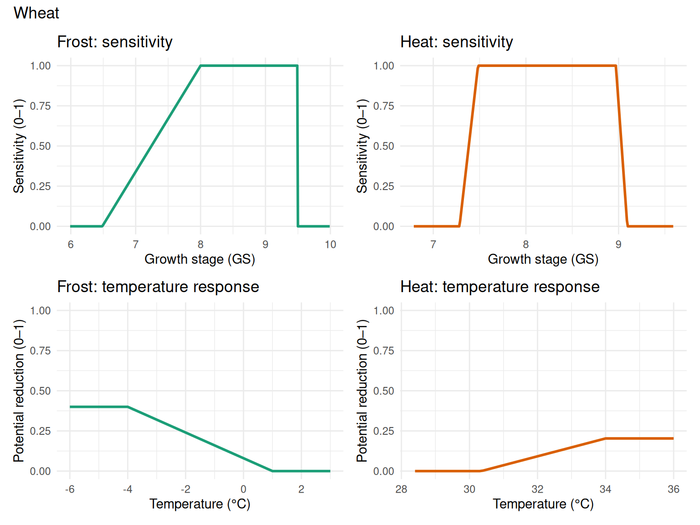
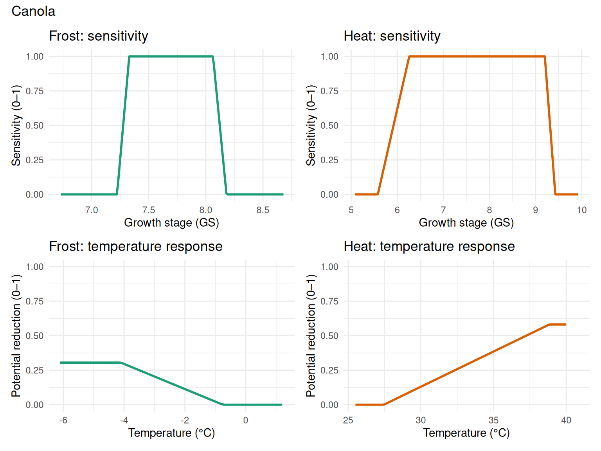
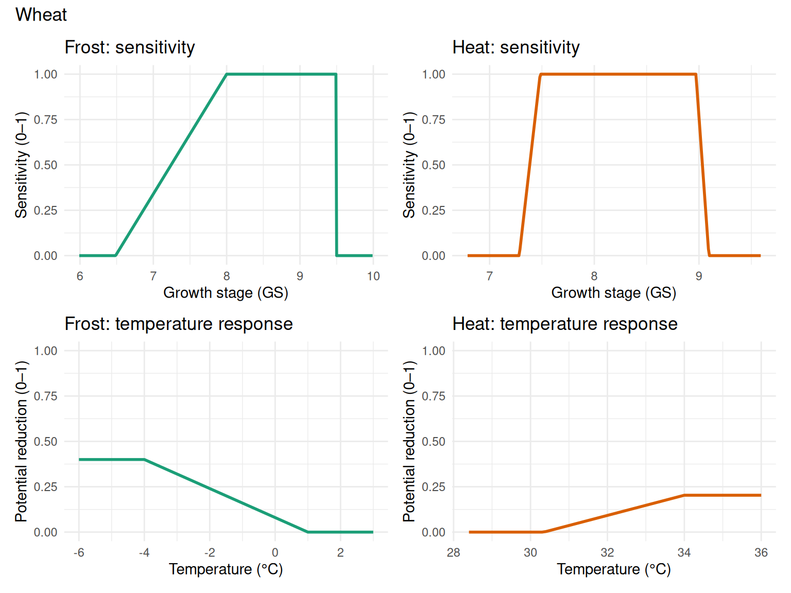
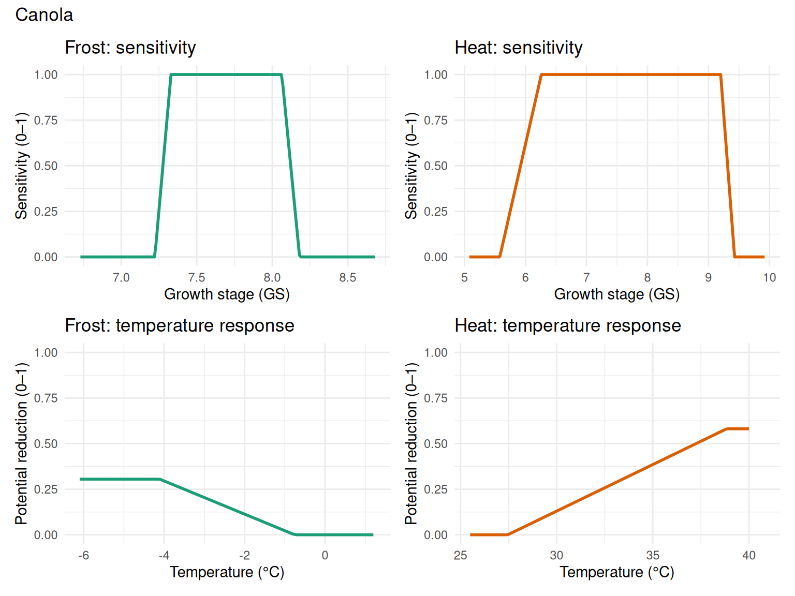

title: “FrostHeatDamageFunctions” output: html_document draft: true —
This FrostHeatDamageFunctions function computes daily and cumulative damage ratios (0–1) for frost and heat by combining a temperature‑driven potential yield reduction (piecewise linear between lower/upper thresholds with a maximum reduction) and a growth‑stage sensitivity factor (piecewise linear). The result represents the expected fractional yield loss from extreme temperature events.
The FrostHeatDamageFunctions function is developed to account for the effects of frost and heat stresses on yield reduction, which runs at the daily step separating with yield estimation. The damage function is the product of the potential yield reduction induced by extreme(i.e.frost and heat) events and the sensitivity of the yield reduction to the growth stage when the events occur.The potential ratio of yield reduction induced by a frost or heat event is a piece-wise linear function of daily minimum or maximum air temperature, respectively.The potential ratio of yield reduction ranges from 0 to 1 indicating mild to severe yield reduction induced by an extreme event. The function is described with three parameters including the lower and upper temperature thresholds and the maximum yield reduction. The sensitivity of yield reduction to the growth stage is a piece-wise linear function of the growth stage simulated by APSIM. The sensitivity ranges from 0 to 1 indicating the least to most sensitivity of yield reduction.The function has four parameters: the lower and upper growth stage thresholds of the sensitive period to frost or heat stress, and the lower and upper growth stage thresholds of the most sensitive period around flowering when sensitivity equals 1. The same function of sensitivity applies to both frost and heat stress but with different parameterizations.
The following inputs are required for the FrostHeatDamageFunctions function with default values for wheat and canola crops:
| Parameter (property) | Description | Wheat | Canola |
|---|---|---|---|
| FrostLowTT | Lower temperature threshold for frost damage (°C) | -4.00 | -4.11 |
| FrostMaxReductionRatio | Yield reduction ratio at the lower threshold (0–1, max reduction) | 0.40 | 0.31 |
| FrostUpTT | Upper temperature threshold for frost damage (°C) | 1.00 | -0.75 |
| FrostMinReductionRatio | Yield reduction ratio at the upper threshold (0–1, min reduction) | 0.00 | 0.00 |
| FrostStartSensitiveGS | Start of the frost-sensitive growth stage period (GS units) | 6.49 | 7.22 |
| FrostStartMostSensitiveGS | Start of the most-sensitive period (sensitivity = 1) (GS units) | 8.00 | 7.33 |
| FrostEndMostSensitiveGS | End of the most-sensitive period (sensitivity = 1) (GS units) | 9.50 | 8.06 |
| FrostEndSensitiveGS | End of the frost-sensitive growth stage period (GS units) | 9.50 | 8.18 |
| Parameter (property) | Description | Wheat | Canola |
|---|---|---|---|
| HeatLowTT | Lower temperature threshold for heat damage (°C) | 30.35 | 27.45 |
| HeatMinReductionRatio | Yield reduction ratio at the lower threshold (0–1, min reduction) | 0.00 | 0.00 |
| HeatUpTT | Upper temperature threshold for heat damage (°C) | 34.00 | 38.84 |
| HeatMaxReductionRatio | Yield reduction ratio at the upper threshold (0–1, max reduction) | 0.20 | 0.58 |
| HeatStartSensitiveGS | Start of the heat-sensitive growth stage period (GS units) | 7.28 | 5.58 |
| HeatStartMostSensitiveGS | Start of the most-sensitive period (sensitivity = 1) (GS units) | 7.48 | 6.26 |
| HeatEndMostSensitiveGS | End of the most-sensitive period (sensitivity = 1) (GS units) | 8.97 | 9.20 |
| HeatEndSensitiveGS | End of the heat-sensitive growth stage period (GS units) | 9.09 | 9.43 |
The figures below illustrate the temperature response and growth stage sensitivity functions for frost and heat damage for both wheat and canola crops using the default parameters.


Methodology
This section describes the internal workflow and formulas used by FrostHeatDamageFunctions. The implementation is driven by two event handlers:
Initialization (OnDoSowing) - All reportable and internal accumulators are initialized: - per-day values: FrostPotentialReductionRatio, FrostSensitivity, FrostReductionRatio, HeatPotentialReductionRatio, HeatSensitivity, HeatReductionRatio, FrostHeatReductionRatio - accumulators: FrostOverallRemaining = 1, HeatOverallRemaining = 1, CumulativeFrostReductionRatio = 0, CumulativeHeatReductionRatio = 0, CumulativeFrostHeatReductionRatio = 0 - counters and trackers: FrostEventNumber, HeatEventNumber, FrostSensitivePeriodStartDAS, FrostSensitivePeriodEndDAS, HeatSensitivePeriodStartDAS, HeatSensitivePeriodEndDAS
Daily calculations (OnDoManagementCalculations) 1. Preconditions - The component verifies it is attached to the correct Plant parent and that Plant.IsAlive; otherwise the daily calculations are skipped.
Notes and assumptions - Piecewise linear parameterizations (thresholds and max/min reduction ratios) control severity and timing sensitivity. - Cumulative damage is applied multiplicatively (remaining fraction), which prevents total losses exceeding 100% and properly accounts for sequential events. - Sensitive period start/end are captured as the first day the crop growth stage equals or exceeds the corresponding threshold, recorded in days after sowing.
Helper methods implemented in the code - FrostPotentialReductionRatioFun(double t) - FrostSensitivityFun(double GrowthStage) - HeatPotentialReductionRatioFun(double t) - HeatSensitivityFun(double GrowthStage)
These implement the respective piecewise linear formulas described above and are invoked each day by OnDoManagementCalculations.
Events Listened For
These are signals or notifications that the function listens for from other parts of the simulation:
| Event | Purpose |
|---|---|
| Sowing | Initialize internal variables for frost and heat damage functions |
| DoManagementCalculations | Perform the actual calculations for frost and heat damage functions |
Events Raised to
No events are raised by this function.
Configurable and Reportable Properties
No configurable properties are available for this function.
Read-Only Reportable Properties
| Property | Type | Description |
|---|---|---|
FrostPotentialReductionRatio |
double | Daily potential yield reduction ratio by a frost event. |
FrostSensitivity |
double | Daily sensitivity of yield reduction to growth stage when the frost event occurs. |
FrostReductionRatio |
double | Daily actual yield reduction ratio by frost stress. |
HeatPotentialReductionRatio |
double | Daily potential yield reduction ratio by a heat event. |
HeatSensitivity |
double | Daily sensitivity of yield reduction to growth stage when the heat event occurs. |
HeatReductionRatio |
double | Daily actual yield reduction ratio by heat stress. |
FrostHeatReductionRatio |
double | Daily actual yield reduction ratio by combined frost and heat stress. |
CumulativeFrostReductionRatio |
double | Cumulative actual yield reduction ratio induced by frost stress. |
CumulativeHeatReductionRatio |
double | Cumulative actual yield reduction ratio induced by heat stress. |
FrostEventNumber |
double | Number of frost events during the sensitive period. |
HeatEventNumber |
double | Number of heat events during the sensitive period. |
CumulativeFrostHeatReductionRatio |
double | Cumulative actual yield reduction ratio induced by both frost and heat stress. |
FrostHeatYield |
double | Frost- and heat-limited yield (units: g/m²). |
FrostSensitivePeriodStartDAS |
double | Start of frost sensitive period in days after sowing (units: days). |
FrostSensitivePeriodEndDAS |
double | End of frost sensitive period in days after sowing (units: days). |
HeatSensitivePeriodStartDAS |
double | Start of heat sensitive period in days after sowing (units: days). |
HeatSensitivePeriodEndDAS |
double | End of heat sensitive period in days after sowing (units: days). |
FrostHeatDamageFunctions can be added as a child of a Crop Model in the model tree.